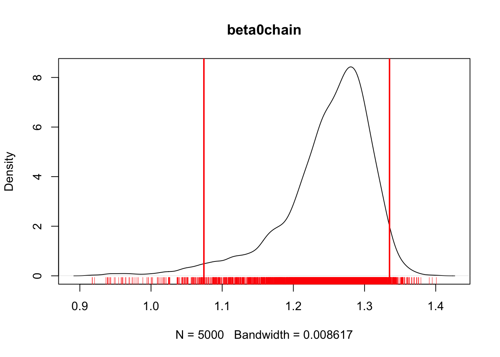
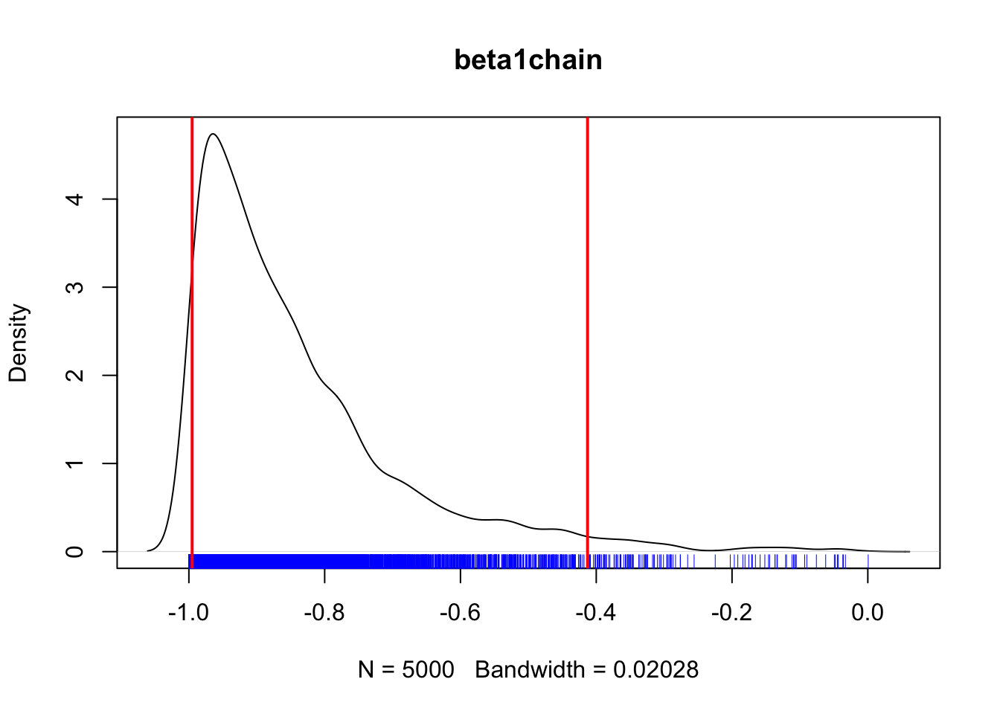
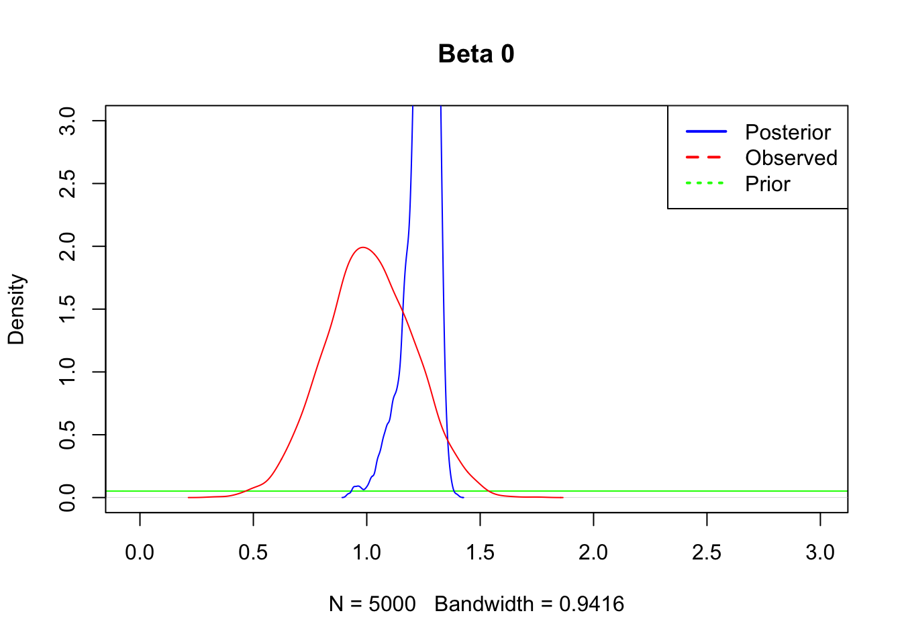
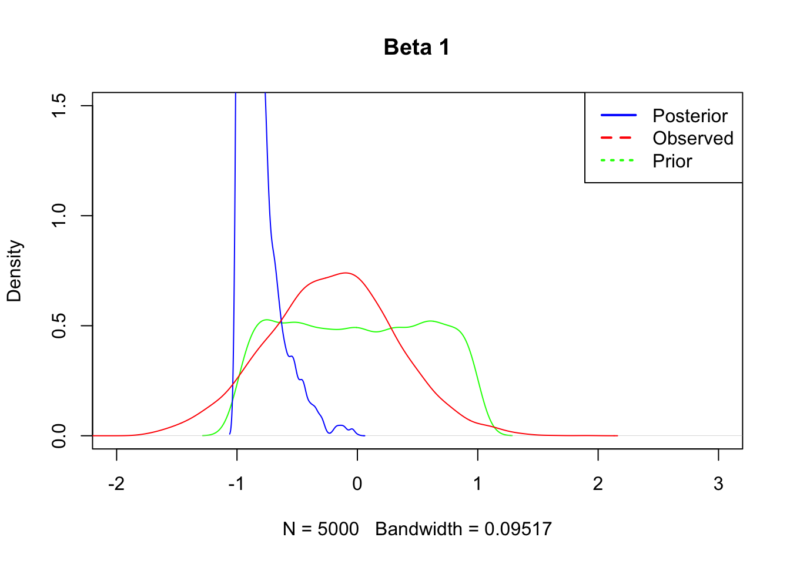
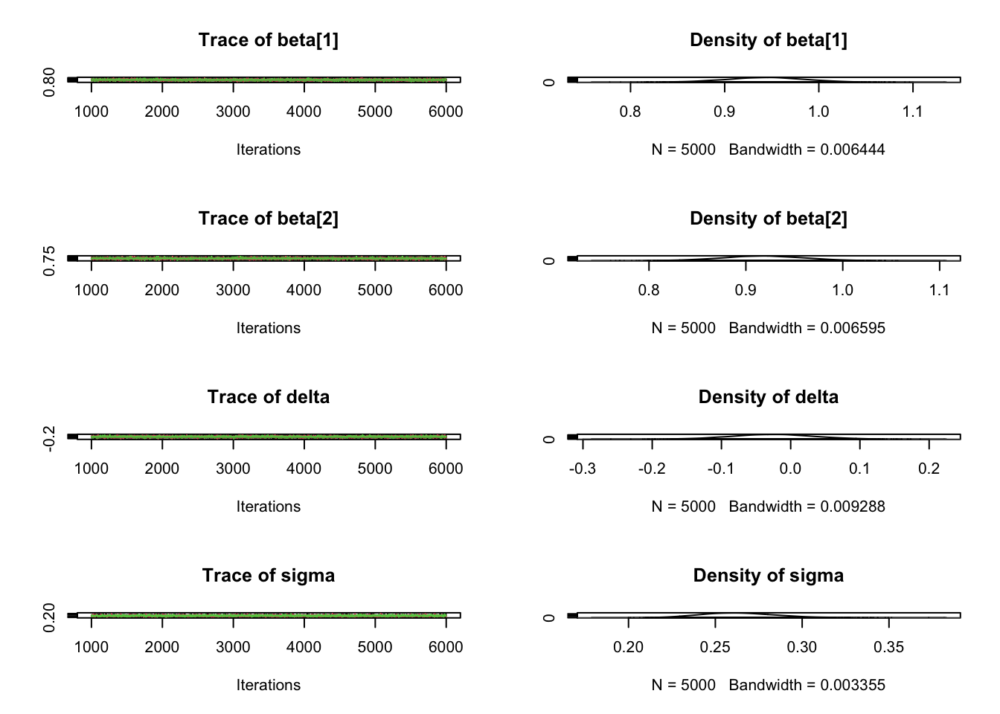
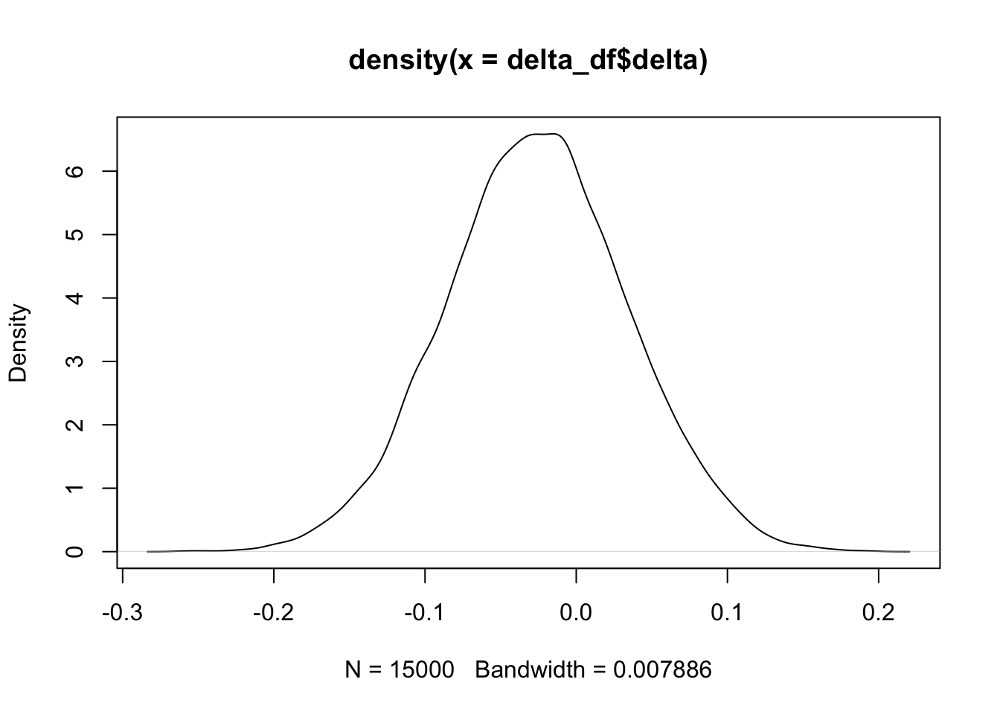
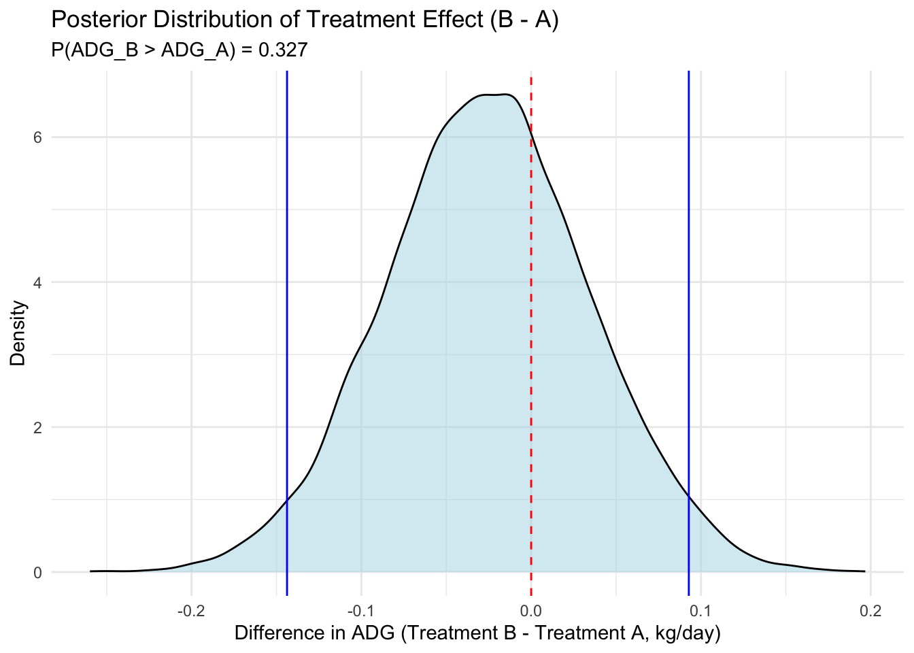

6 Modeling
6.1 Libraries
# Libraries to install
# List of packages to check/install
packages <- c("data.table", "tidyverse", "rjags", "MCMCvis", "ggExtra")
# Function to check and install packages
install_if_missing = function(pkg) {
if (!require(pkg, character.only = TRUE)) {
install.packages(pkg, dependencies = TRUE)
library(pkg, character.only = TRUE)
} else {
cat(paste("Package", pkg, "is already installed.\n"))
}
}
# Apply the function to each package in the list
lapply(packages, install_if_missing)## Package data.table is already installed.
## Package tidyverse is already installed.
## Package rjags is already installed.
## Package MCMCvis is already installed.
## Package ggExtra is already installed.## [[1]]
## NULL
##
## [[2]]
## NULL
##
## [[3]]
## NULL
##
## [[4]]
## NULL
##
## [[5]]
## NULL6.2 Data
We have a dataset representing heifer performance, feeding behavior, and dry matter intake over a 56 day back grounding period. Heifers were assigned to a 2x2 crossover design to test a feed additives effect on animal behavior, performance, and morbidity during weaning.
## # A tibble: 6 × 21
## VID Pen CreepTrt WeanTrt D_42_BW Creep_Gain Shipping_Loss Day56_InitialBW Day56_ADG Day56_MMBW Day56_DMI Day56_Residual D_1_EV AVE_TTB BVFREQ BVDUR BVFREQsd
## <dbl> <dbl> <chr> <chr> <dbl> <dbl> <dbl> <dbl> <dbl> <dbl> <dbl> <dbl> <dbl> <dbl> <dbl> <dbl> <dbl>
## 1 248 8 A A 261. 34.5 -5.44 287. 1.22 1.22 6.97 -0.118 0.44 36.2 81.0 6451. 81.0
## 2 249 8 A A 210. 23.1 -4.54 223. 0.946 0.946 6.54 0.266 0.389 23.3 91.4 7143. 91.4
## 3 276 6 B A 177. 29.0 -3.63 200. 1.15 1.15 6.24 0.266 0.365 69.8 76.6 7471 76.6
## 4 298 6 B A 198. 30.8 -6.80 218. 1.06 1.06 6.29 -0.149 0.555 84.1 85.7 5156. 85.7
## 5 322 8 A A 198. 34.5 -3.63 233. 1.30 1.30 7.29 0.376 0.662 51.5 59.2 8871. 59.2
## 6 346 6 B A 189. 13.6 -2.27 185. 0.716 0.716 5.61 -0.0531 0.572 48.0 63.9 6888. 63.9
## # ℹ 4 more variables: BVDURsd <dbl>, uDMI <dbl>, sdDMI <dbl>, cvDMI <dbl>## VID Pen CreepTrt WeanTrt D_42_BW Creep_Gain Shipping_Loss Day56_InitialBW Day56_ADG
## Min. :248.0 Min. :5.000 Length:77 Length:77 Min. :160.0 Min. : 5.897 Min. :-52.6167 Min. :155.5 Min. :0.05724
## 1st Qu.:672.0 1st Qu.:6.000 Class :character Class :character 1st Qu.:179.5 1st Qu.:23.133 1st Qu.:-12.2470 1st Qu.:196.8 1st Qu.:0.83159
## Median :714.0 Median :7.000 Mode :character Mode :character Median :195.0 Median :30.844 Median : -8.1647 Median :208.4 Median :0.96550
## Mean :670.8 Mean :6.519 Mean :195.3 Mean :29.949 Mean : -9.2486 Mean :208.5 Mean :0.93066
## 3rd Qu.:756.0 3rd Qu.:7.000 3rd Qu.:207.3 3rd Qu.:35.834 3rd Qu.: -5.4431 3rd Qu.:220.5 3rd Qu.:1.11022
## Max. :821.0 Max. :8.000 Max. :260.9 Max. :84.368 Max. : 0.9072 Max. :287.2 Max. :1.38238
## Day56_MMBW Day56_DMI Day56_Residual D_1_EV AVE_TTB BVFREQ BVDUR BVFREQsd BVDURsd
## Min. : 0.7139 Min. :3.916 Min. :-0.877272 Min. :0.0000 Min. : 21.14 Min. : 37.57 Min. : 3053 Min. : 14.78 Min. : 1672
## 1st Qu.:38.3352 1st Qu.:5.860 1st Qu.:-0.209799 1st Qu.:0.3890 1st Qu.: 32.82 1st Qu.: 60.80 1st Qu.: 5776 1st Qu.: 60.80 1st Qu.: 5776
## Median :47.4249 Median :6.244 Median :-0.088852 Median :0.5440 Median : 48.79 Median : 75.09 Median : 6589 Median : 75.09 Median : 6589
## Mean :37.1065 Mean :6.152 Mean : 0.001859 Mean :0.5812 Mean : 54.79 Mean : 72.25 Mean : 6915 Mean : 71.65 Mean : 6810
## 3rd Qu.:50.5209 3rd Qu.:6.542 3rd Qu.: 0.247658 3rd Qu.:0.6670 3rd Qu.: 68.16 3rd Qu.: 82.77 3rd Qu.: 7650 3rd Qu.: 82.77 3rd Qu.: 7650
## Max. :57.2651 Max. :7.477 Max. : 1.011334 Max. :2.2210 Max. :147.13 Max. :130.86 Max. :13055 Max. :130.86 Max. :13055
## uDMI sdDMI cvDMI
## Min. :5.103 Min. :1.947 Min. :0.2816
## 1st Qu.:6.374 1st Qu.:2.326 1st Qu.:0.3364
## Median :6.718 Median :2.432 Median :0.3676
## Mean :6.681 Mean :2.496 Mean :0.3764
## 3rd Qu.:7.033 3rd Qu.:2.645 3rd Qu.:0.3984
## Max. :7.860 Max. :3.226 Max. :0.62686.3 Excercise 1
6.3.1 Heifer data
## [1] "VID" "Pen" "CreepTrt" "WeanTrt" "D_42_BW" "Creep_Gain" "Shipping_Loss" "Day56_InitialBW"
## [9] "Day56_ADG" "Day56_MMBW" "Day56_DMI" "Day56_Residual" "D_1_EV" "AVE_TTB" "BVFREQ" "BVDUR"
## [17] "BVFREQsd" "BVDURsd" "uDMI" "sdDMI" "cvDMI"## `geom_smooth()` using formula = 'y ~ x'
6.3.2 Model
Next we need to define the Jags model to find the conjugated distribution
# Data list ----
# Data
data_list <- list(
x = heifer$cvDMI, # Example predictor values
y = heifer$Day56_ADG, # Example response values
N = nrow(heifer) # Number of observations
)
## Jags model ----
# Define the model
model_string <- "
model {
for (i in 1:N) {
y[i] ~ dnorm(mu[i], tau)
mu[i] <- beta0 + beta1 * x[i]
}
# Priors
beta0 ~ dunif(-10, 10)
beta1 ~ dunif(-1, 1)
sigma ~ dunif(0, 100)
tau <- 1 / (sigma * sigma)
}
"
# Initial values
inits <- list(list(beta0 = 0, beta1 = 0, sigma = 1))
# Parameters to monitor
(params <- c("beta0", "beta1", "sigma", 'y'))## [1] "beta0" "beta1" "sigma" "y"Now we have the model set up, we are ready to run the model through jags
# Run the model
model <- jags.model(textConnection(model_string), data = data_list, inits = inits, n.chains = 1)## Compiling model graph
## Resolving undeclared variables
## Allocating nodes
## Graph information:
## Observed stochastic nodes: 77
## Unobserved stochastic nodes: 3
## Total graph size: 320
##
## Initializing model
##
## | | | 0% | |+ | 2% | |++ | 4% | |+++ | 6% | |++++ | 8% | |+++++ | 10% | |++++++ | 12% | |+++++++ | 14% | |++++++++ | 16% | |+++++++++ | 18% | |++++++++++ | 20% | |+++++++++++ | 22% | |++++++++++++ | 24% | |+++++++++++++ | 26% | |++++++++++++++ | 28% | |+++++++++++++++ | 30% | |++++++++++++++++ | 32% | |+++++++++++++++++ | 34% | |++++++++++++++++++ | 36% | |+++++++++++++++++++ | 38% | |++++++++++++++++++++ | 40% | |+++++++++++++++++++++ | 42% | |++++++++++++++++++++++ | 44% | |+++++++++++++++++++++++ | 46% | |++++++++++++++++++++++++ | 48% | |+++++++++++++++++++++++++ | 50% | |++++++++++++++++++++++++++ | 52% | |+++++++++++++++++++++++++++ | 54% | |++++++++++++++++++++++++++++ | 56% | |+++++++++++++++++++++++++++++ | 58% | |++++++++++++++++++++++++++++++ | 60% | |+++++++++++++++++++++++++++++++ | 62% | |++++++++++++++++++++++++++++++++ | 64% | |+++++++++++++++++++++++++++++++++ | 66% | |++++++++++++++++++++++++++++++++++ | 68% | |+++++++++++++++++++++++++++++++++++ | 70% | |++++++++++++++++++++++++++++++++++++ | 72% | |+++++++++++++++++++++++++++++++++++++ | 74% | |++++++++++++++++++++++++++++++++++++++ | 76% | |+++++++++++++++++++++++++++++++++++++++ | 78% | |++++++++++++++++++++++++++++++++++++++++ | 80% | |+++++++++++++++++++++++++++++++++++++++++ | 82% | |++++++++++++++++++++++++++++++++++++++++++ | 84% | |+++++++++++++++++++++++++++++++++++++++++++ | 86% | |++++++++++++++++++++++++++++++++++++++++++++ | 88% | |+++++++++++++++++++++++++++++++++++++++++++++ | 90% | |++++++++++++++++++++++++++++++++++++++++++++++ | 92% | |+++++++++++++++++++++++++++++++++++++++++++++++ | 94% | |++++++++++++++++++++++++++++++++++++++++++++++++ | 96% | |+++++++++++++++++++++++++++++++++++++++++++++++++ | 98% | |++++++++++++++++++++++++++++++++++++++++++++++++++| 100%## | | | 0% | |* | 2% | |** | 4% | |*** | 6% | |**** | 8% | |***** | 10% | |****** | 12% | |******* | 14% | |******** | 16% | |********* | 18% | |********** | 20% | |*********** | 22% | |************ | 24% | |************* | 26% | |************** | 28% | |*************** | 30% | |**************** | 32% | |***************** | 34% | |****************** | 36% | |******************* | 38% | |******************** | 40% | |********************* | 42% | |********************** | 44% | |*********************** | 46% | |************************ | 48% | |************************* | 50% | |************************** | 52% | |*************************** | 54% | |**************************** | 56% | |***************************** | 58% | |****************************** | 60% | |******************************* | 62% | |******************************** | 64% | |********************************* | 66% | |********************************** | 68% | |*********************************** | 70% | |************************************ | 72% | |************************************* | 74% | |************************************** | 76% | |*************************************** | 78% | |**************************************** | 80% | |***************************************** | 82% | |****************************************** | 84% | |******************************************* | 86% | |******************************************** | 88% | |********************************************* | 90% | |********************************************** | 92% | |*********************************************** | 94% | |************************************************ | 96% | |************************************************* | 98% | |**************************************************| 100%## | | | 0% | |* | 2% | |** | 4% | |*** | 6% | |**** | 8% | |***** | 10% | |****** | 12% | |******* | 14% | |******** | 16% | |********* | 18% | |********** | 20% | |*********** | 22% | |************ | 24% | |************* | 26% | |************** | 28% | |*************** | 30% | |**************** | 32% | |***************** | 34% | |****************** | 36% | |******************* | 38% | |******************** | 40% | |********************* | 42% | |********************** | 44% | |*********************** | 46% | |************************ | 48% | |************************* | 50% | |************************** | 52% | |*************************** | 54% | |**************************** | 56% | |***************************** | 58% | |****************************** | 60% | |******************************* | 62% | |******************************** | 64% | |********************************* | 66% | |********************************** | 68% | |*********************************** | 70% | |************************************ | 72% | |************************************* | 74% | |************************************** | 76% | |*************************************** | 78% | |**************************************** | 80% | |***************************************** | 82% | |****************************************** | 84% | |******************************************* | 86% | |******************************************** | 88% | |********************************************* | 90% | |********************************************** | 92% | |*********************************************** | 94% | |************************************************ | 96% | |************************************************* | 98% | |**************************************************| 100%And do a preliminary look at the results.
beta0chain = MCMCchains(samples, params = 'beta0')
plot(density(beta0chain), main = "beta0chain")
rug(beta0chain, co = 'red')
abline(v = quantile(beta0chain, c(.025, .975)), col = "red", lwd = 2)
## 2.5% 97.5%
## 1.074299 1.335093## [1] 1.247424beta1chain = MCMCchains(samples, params = 'beta1')
plot(density(beta1chain), main = 'beta1chain')
rug(beta1chain, col = 'blue')
abline(v = quantile(beta1chain, c(.025, .975)), col = "red", lwd = 2)
## 2.5% 97.5%
## -0.9952038 -0.4128096y = MCMCpstr(samples, params = 'y')
plot(density(y$y), main = 'y')
rug(y$y, col = 'blue')
abline(v = quantile(y$y, c(.025, .975)), col = "red", lwd = 2)
## 2.5% 97.5%
## 0.2546595 1.3006211Summarise results
6.3.3 Summary Plots
Prior Plots
## Plots
# Prior plots ------
iter = 5000
priors = data.table(b0 = runif(iter,-10, 10),
b1 = runif(iter,-1, 1),
sigma = runif(iter, 0,100))
# priors
class(samples)## [1] "mcmc.list"##
## Call:
## lm(formula = data_list$y ~ data_list$x)
##
## Residuals:
## Min 1Q Median 3Q Max
## -0.53087 -0.15294 -0.00357 0.15347 0.43800
##
## Coefficients:
## Estimate Std. Error t value Pr(>|t|)
## (Intercept) 1.8462 0.1717 10.754 < 2e-16 ***
## data_list$x -2.4326 0.4511 -5.392 7.78e-07 ***
## ---
## Signif. codes: 0 '***' 0.001 '**' 0.01 '*' 0.05 '.' 0.1 ' ' 1
##
## Residual standard error: 0.2221 on 75 degrees of freedom
## Multiple R-squared: 0.2794, Adjusted R-squared: 0.2698
## F-statistic: 29.07 on 1 and 75 DF, p-value: 7.777e-07Posterior Plots
## Beta 0 ----
observed = rnorm(iter, 1.01, 0.20)
beta0 = MCMCchains(samples, params = c("beta0"))
length(beta0)## [1] 5000plot(density(priors$b0), xlim = c(-.03, 3), ylim = c(0,3), col = 'green', main = 'Beta 0')
lines(density(beta0), col = 'blue')
lines(density(observed), col = 'red')
legend("topright", legend = c("Posterior", "Observed", "Prior"),
col = c("blue", "red", "green"), lwd = 2, lty = c(1, 2, 3))
# Beta 1 ----
uCV = mean(heifer$cvDMI)
sdCV = sd(heifer$cvDMI)
oCV = rnorm(iter, -0.211, 0.53)
beta1 = MCMCchains(samples, params = c("beta1"))
plot(density(priors$b1), xlim = c(-2, 3), ylim = c(0,1.5), col = 'green', main = 'Beta 1')
lines(density(beta1), col = 'blue')
lines(density(oCV), col = 'red')
legend("topright", legend = c("Posterior", "Observed", "Prior"),
col = c("blue", "red", "green"), lwd = 2, lty = c(1, 2, 3))
6.4 Excercise 2
Now lets fit the model to see the effect of feed additive on post weaning growth. ### Data 2
## [1] "VID" "Pen" "CreepTrt" "WeanTrt" "D_42_BW" "Creep_Gain" "Shipping_Loss" "Day56_InitialBW"
## [9] "Day56_ADG" "Day56_MMBW" "Day56_DMI" "Day56_Residual" "D_1_EV" "AVE_TTB" "BVFREQ" "BVDUR"
## [17] "BVFREQsd" "BVDURsd" "uDMI" "sdDMI" "cvDMI"data_list <- list(
x = heifer$WeanTrt, # Example predictor values
y = heifer$Day56_ADG, # Example response values
N = nrow(heifer) # Number of observations
)6.4.1 Jags model 2
Eff
## [1] "VID" "Pen" "CreepTrt" "WeanTrt" "D_42_BW" "Creep_Gain" "Shipping_Loss" "Day56_InitialBW"
## [9] "Day56_ADG" "Day56_MMBW" "Day56_DMI" "Day56_Residual" "D_1_EV" "AVE_TTB" "BVFREQ" "BVDUR"
## [17] "BVFREQsd" "BVDURsd" "uDMI" "sdDMI" "cvDMI"data_list <- list(
x = ifelse(heifer$WeanTrt == "A",1,2), # Example predictor values
y = heifer$Day56_ADG, # Example response values
N = nrow(heifer), # Number of observations
K = length(unique(heifer$WeanTrt)) # Number of categories
)
## Jags model ----
# Define the model
model_string <- "
model {
# Likelihood
for (i in 1:N) {
y[i] ~ dnorm(mu[i], tau)
mu[i] <- beta[x[i]] # Treatment-specific mean
}
# Priors
for (k in 1:K) {
beta[k] ~ dnorm(0, 0.001) # Vague prior for treatment means
}
tau ~ dgamma(0.001, 0.001) # Precision (1/variance)
sigma <- 1 / sqrt(tau) # Standard deviation
# Derived quantity: difference between treatments (B - A)
delta <- beta[2] - beta[1]
}
"
# Write model to a temporary file
writeLines(model_string, "model.txt")
# Initialize JAGS model
jags_model <- jags.model(
file = "model.txt",
data = data_list,
n.chains = 3, # Number of MCMC chains
n.adapt = 1000 # Adaptation period
)## Compiling model graph
## Resolving undeclared variables
## Allocating nodes
## Graph information:
## Observed stochastic nodes: 77
## Unobserved stochastic nodes: 3
## Total graph size: 165
##
## Initializing model## | | | 0% | |* | 2% | |** | 4% | |*** | 6% | |**** | 8% | |***** | 10% | |****** | 12% | |******* | 14% | |******** | 16% | |********* | 18% | |********** | 20% | |*********** | 22% | |************ | 24% | |************* | 26% | |************** | 28% | |*************** | 30% | |**************** | 32% | |***************** | 34% | |****************** | 36% | |******************* | 38% | |******************** | 40% | |********************* | 42% | |********************** | 44% | |*********************** | 46% | |************************ | 48% | |************************* | 50% | |************************** | 52% | |*************************** | 54% | |**************************** | 56% | |***************************** | 58% | |****************************** | 60% | |******************************* | 62% | |******************************** | 64% | |********************************* | 66% | |********************************** | 68% | |*********************************** | 70% | |************************************ | 72% | |************************************* | 74% | |************************************** | 76% | |*************************************** | 78% | |**************************************** | 80% | |***************************************** | 82% | |****************************************** | 84% | |******************************************* | 86% | |******************************************** | 88% | |********************************************* | 90% | |********************************************** | 92% | |*********************************************** | 94% | |************************************************ | 96% | |************************************************* | 98% | |**************************************************| 100%# Sample from posterior
samples <- coda.samples(
jags_model,
variable.names = c("beta", "sigma", "delta"),
n.iter = 5000
)## | | | 0% | |* | 2% | |** | 4% | |*** | 6% | |**** | 8% | |***** | 10% | |****** | 12% | |******* | 14% | |******** | 16% | |********* | 18% | |********** | 20% | |*********** | 22% | |************ | 24% | |************* | 26% | |************** | 28% | |*************** | 30% | |**************** | 32% | |***************** | 34% | |****************** | 36% | |******************* | 38% | |******************** | 40% | |********************* | 42% | |********************** | 44% | |*********************** | 46% | |************************ | 48% | |************************* | 50% | |************************** | 52% | |*************************** | 54% | |**************************** | 56% | |***************************** | 58% | |****************************** | 60% | |******************************* | 62% | |******************************** | 64% | |********************************* | 66% | |********************************** | 68% | |*********************************** | 70% | |************************************ | 72% | |************************************* | 74% | |************************************** | 76% | |*************************************** | 78% | |**************************************** | 80% | |***************************************** | 82% | |****************************************** | 84% | |******************************************* | 86% | |******************************************** | 88% | |********************************************* | 90% | |********************************************** | 92% | |*********************************************** | 94% | |************************************************ | 96% | |************************************************* | 98% | |**************************************************| 100%
So the big question is, was there a difference between treatment A and treatment B?
# Extract posterior samples for delta
delta_samples <- as.matrix(samples)[, "delta"]
# Calculate probability that Treatment B has higher ADG than A (delta > 0)
prob_B_greater <- mean(delta_samples > 0)
cat("Probability that Treatment B has higher ADG than Treatment A:", prob_B_greater, "\n")## Probability that Treatment B has higher ADG than Treatment A: 0.3272# Create a density plot with shaded area for delta > 0
delta_df <- data.frame(delta = delta_samples)
plot(density(delta_df$delta))
ggplot(delta_df, aes(x = delta)) +
geom_density(fill = "lightblue", alpha = 0.5) +
geom_vline(xintercept = 0, linetype = "dashed", color = "red") +
geom_vline(xintercept = quantile(delta_df$delta, c(0.025, 0.975)), color = 'blue')+
labs(
title = "Posterior Distribution of Treatment Effect (B - A)",
subtitle = paste("P(ADG_B > ADG_A) =", round(prob_B_greater, 3)),
x = "Difference in ADG (Treatment B - Treatment A, kg/day)",
y = "Density"
) +
theme_minimal()